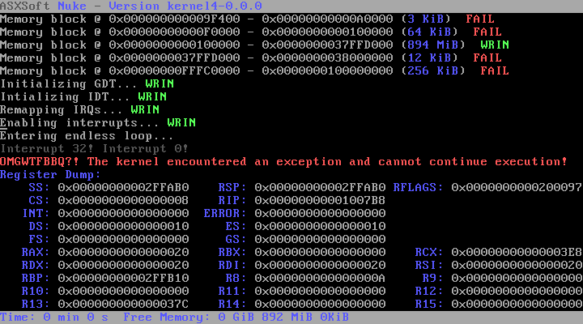

Nuke
Nuke ist mein Hobby OS, welches ursprünglich mal nur im Long Mode laufen sollte. Jetzt gibt es Nuke aber auch für Leute ohne Long Mode CPU. Hauptziel von Nuke was es, dem Benutzer eine schnelle Arbeit am Computer zu gewährleisten. Nuke soll es nun einigermaßen schaffen, einen Exokernel umzusetzen. Inwieweit mir dies gelingt weiß ich allerdings selbst noch nicht abzuschätzen ^^
Inhaltsverzeichnis
Screenshot

Aktuelle Features
- SMP (zumindest fast fertig ^^)
- PMM
- Syscalls
Die Zukunft
Genauere Pläne stehen noch nicht fest. Sicher ist aber, dass Nuke eine libPosix bekommen wird und auch einmal Linuxprogramme unterstützen soll. Zudem ist angedacht, CDI zu implementieren.
Ehemals Geplante Features
- NukeFS
- Initial Ramdisk
- AVOP (Interpreter-Sprache)
- HAL-Lib
- angepasstes Tastatur-Layout
- Festplatte beschreiben/lesen (RAW)
- AMD Processor Optimization Module
Historie
kernel4-0.0.1
- Paging
- Rudimentäres MM
- delete/delete[] und new/new[] (Funktioniert, solang Objekt kleinergleich Pagegröße)
- IRQ0-Handler alloziert zu Demonstrationszwecken Speicher
kernel4-0.0.0
- Neuester Rewrite, dazwischen liegen noch ein paar Versionen, kernel3 gab's sogar auch mal (glaub ich zumindest)
- Alles so weit wie möglich in C++0x
- Zielsetzung: Nuke endlich mal benutzbar bekommen und Neueinsteigern Resourcen bieten (Kommentare, UML-Diagramme, ...)
Ver 00004
- Rudimentäre Speicherverwaltung
- Rudimentäres Paging
- Multitasking
Ver 00003
- IDT & GDT für Long Mode
- Exceptions & IRQs werden durch einen Stub-Handler abgefangen
- Long Mode
- Arbeitsspeicher wird erkannt
Ver 00002
- GDT wird geladen
- Protected Mode
Ver 00001
- Werte der Register auslesbar
- VGA
- Kernel wird von Floppy gelesen
Ver 00000
- Bootloader gibt Hallo Welt aus und rebootet nach Tastendruck